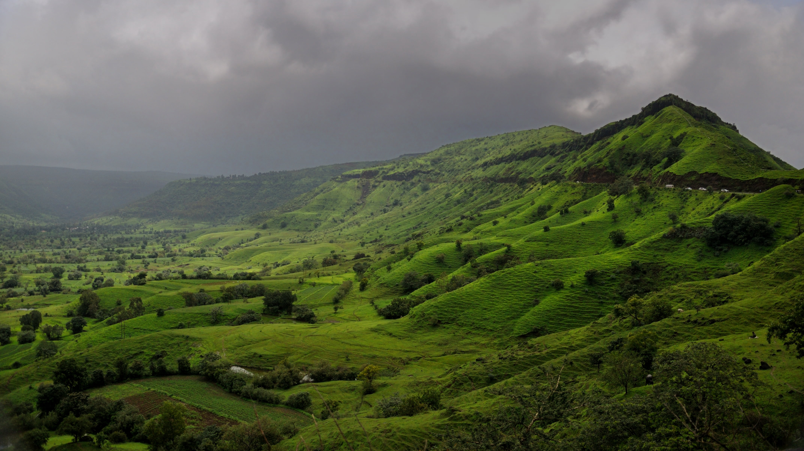

50,000/day
The major attractions in Mumbai include places like Gateway of India, Haji Ali, Mahalakshmi Temple, EsselWorld, Marine Drive, Chhatrapati Shivaji Maharaj Terminus, Global Vipassana Pagoda, Juhu and Chowpatty Beach.Mumbai offers natural heritage and modern entertainment including leisure spots, beaches, cinemas, studios, holy places, amusement parks and historical monuments.

48,000/day
Nagpur, Maharashtra is a major commercial and political center in the Vidarbha region of the state. It's also a key location for the Dalit Buddhist movement and the headquarters of the RSS. Nagpur is known for the Deekshabhoomi, the world's largest hollow Buddhist stupa, which is an A-class tourism and pilgrimage site.

60,000/day
Mahabaleshwar is one of the most popular hill stations in Maharashtra.The spectacular views from the hill station make it one of the cutest romantic rendezvous. Matheran is an eco-friendly hill station near Mumbai. Matheran has 38 points that offer stunning views of the Sahyadri.There many Hill stations like Lonavala-Khandala,Malshej Ghat,Bhimashankar and manu more.
.jpg)


5 hill stations in Maharashtra to get away to. Through the length of its state, Maharashtra encompasses a landscape ranging from the steeply rising Western Ghats, all the way down to the seashore of the Arabian Sea.
5 hill stations in Maharashtra to get away to. Through the length of its state, Maharashtra encompasses a landscape ranging from the steeply rising Western Ghats, all the way down to the seashore of the Arabian Sea.
5 hill stations in Maharashtra to get away to. Through the length of its state, Maharashtra encompasses a landscape ranging from the steeply rising Western Ghats, all the way down to the seashore of the Arabian Sea.
5 hill stations in Maharashtra to get away to. Through the length of its state, Maharashtra encompasses a landscape ranging from the steeply rising Western Ghats, all the way down to the seashore of the Arabian Sea.
Deals & Offers
Customer Reviews
Cancelation Policy
+91 7300382044
palsoumyanil1@gmail.com
Nagpur, Maharashtra
Youtube
Made WithBy Soumyanil, Nikhil